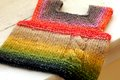

|
||
Premium Patterns Wintry Mix Mitts Love Bytes HawkeyeFree Patterns Kiddie Cadet Summerlin Ruffled Scarf Seamless DS Sock Simply Seamless Pouch Myriads of MushroomsExtras DIY Mitten Blocker Felt Patch Tutorial Yarn Dyeing Tutorial Needle Pouches Knitting Journal |
February 17, 2010 - Posted by Grace SchneblyStripy Baby SetProject Specs Pattern: Oh! Baby Baby Booties designed by Judy Nemish We're so excited to welcome a new little baby into our family! Our oldest sister gave birth two weeks ago, and even though she was born a month premature, she is happy and healthy and living at home now. Her name is Serena and I'm looking forward to finally getting a chance to meet her in person, but until then I'll just be sending lots and lots of hand knits! Since she surprised us and came so early, I was caught a little off guard and didn't have anything made for her yet so I'm trying to play catch up. I've been overwhelmed all of the super adorable baby patterns out there! I know I won't get to them all but that won't stop me from trying. :) I really like this vest pattern. It makes for such a quick knit and the newborn size barely takes any yarn at all. It is a really good use of any left over bits of DK weight yarn you might have laying around. The design is very simple while the pattern is detailed, including a range of sizes from newborn to 4 years and lots of different options to customize the style to fit your tastes. I've already planned on making a larger sized vest for Jojo (Serena's sister) later this year out of Malabrigo Silky and I might also whip up another one to have as an on hand baby gift because the style is well suited for both boys and girls. These booties are the perfect compliment to the Milo vest pattern (They would also make a great set with a Baby Surprise Jacket, Tomten, or February Baby Sweater) and are a breeze to knit. The style seems like it would be great for newborns since they have a roomy foot area and a stretchy cuff that seems like it will stay on no matter how squirmy she is. I had to change a few things to make the pattern work for me. First knit 11 rows after picking up stitches after the cuff (instead of 10). You want the RS to be facing when you move stitches to a holder to work the instep. Then knit 12 rows for the instep instead of 11. Also on the first row of the sole it should be k3 and not k4 at the end of the row. I also should mention that these booties are worked flat and seamed at the end, but the seaming was a minor task. I found it easiest to seam the garter rib cuff first (I made sure to end the cuff so that my CO tail was at the top of the bootie and used it for seaming) then use the ends from where you have to break off and reattach the yarn for the instep to seam it up the rest of the way. I couldn't be happier that I finally got to use up some of this Silk Garden Lite I've had stashed for AGES. Some Noro colorways can be scratchy but this one was the softest I think I've ever felt! I found absolutely no vegetable matter, and if I had I probably wouldn't have used it for a baby item. This colorway probably isn't the most girlie out there but I think the little band of purple on the straps of the vest makes it feminine enough. I also like how the booties ended up as a mismatching pair which I think just gives them a little more character. These two knits were my first Ravelypics projects. Similarly to the 2008 Ravelympics, I'm trying to do a marathon of knitting and complete 10 projects in 2 weeks. I have a pretty good start and actually have two more things already finished so the next two weeks might be jam packed with entries on our blog. I've also loved seeing everyone's knits starting to roll past the finish line, so keep up the great work! |
   Recent ReviewsRecent Posts
 Our Favorites
|
| © 2007 KathrynIvy.com | ||
{kind=link}
{kind=link}
{kind=link}